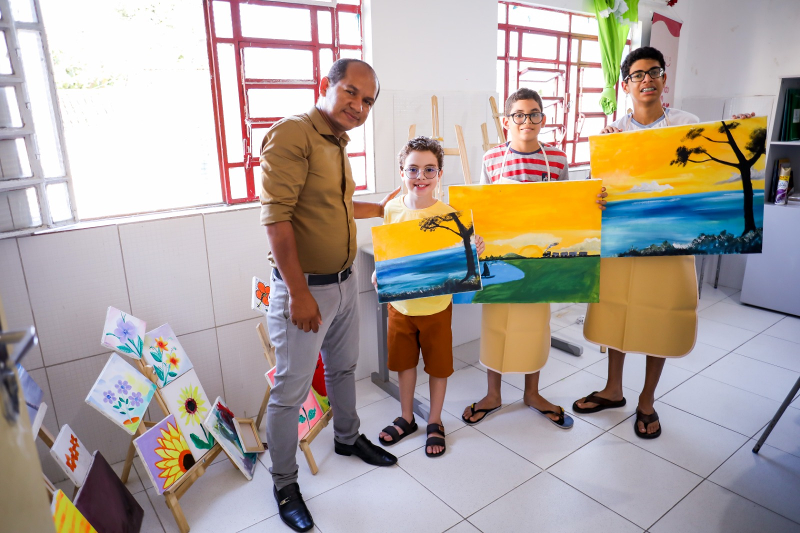
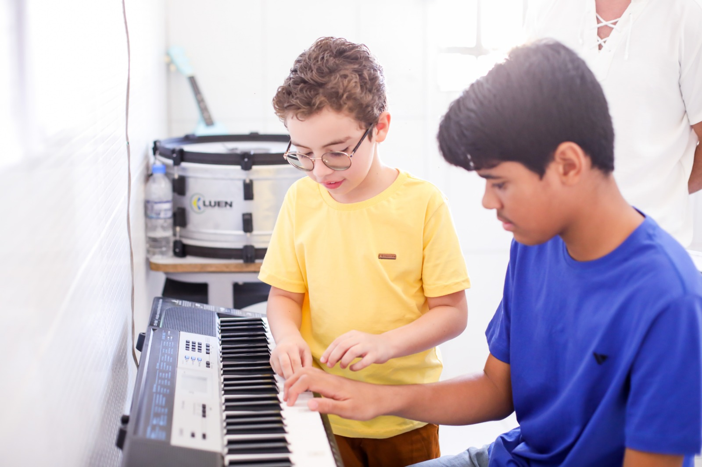
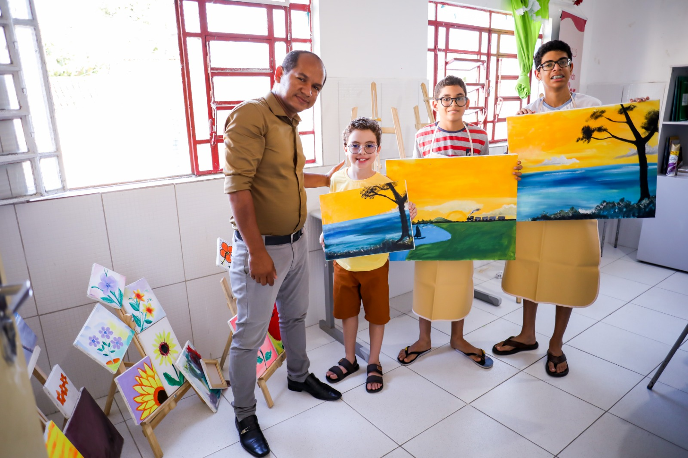
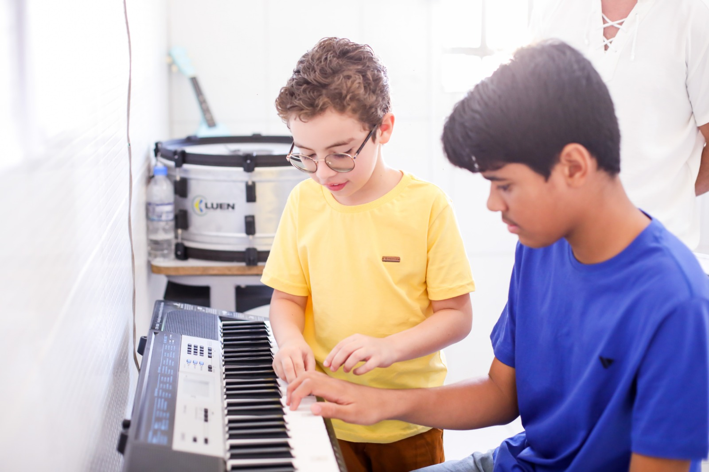
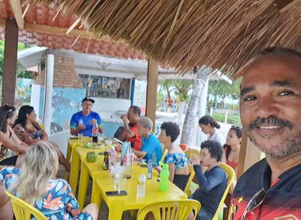

Bem-vindo à
APAE Palmares
 



Atividades na APAE
O grupo que participou deste primeiro encontro é atendido pela Associação de Pais e Amigos dos Excepcionais (APAE-Palmares), e esteve no local junto com seus familiares e com representantes da entidade.

Entrevista: APAE de Palmares, saiba o que é o que faz. - Blog do Sobrinho